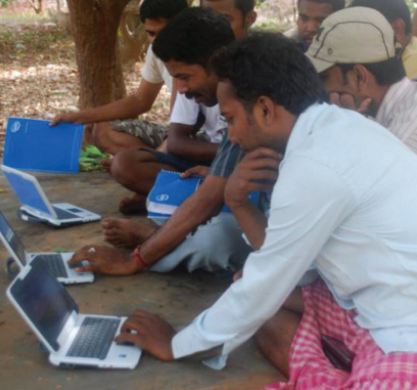
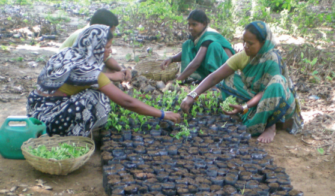
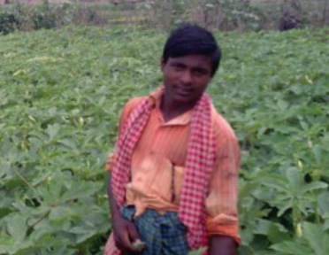
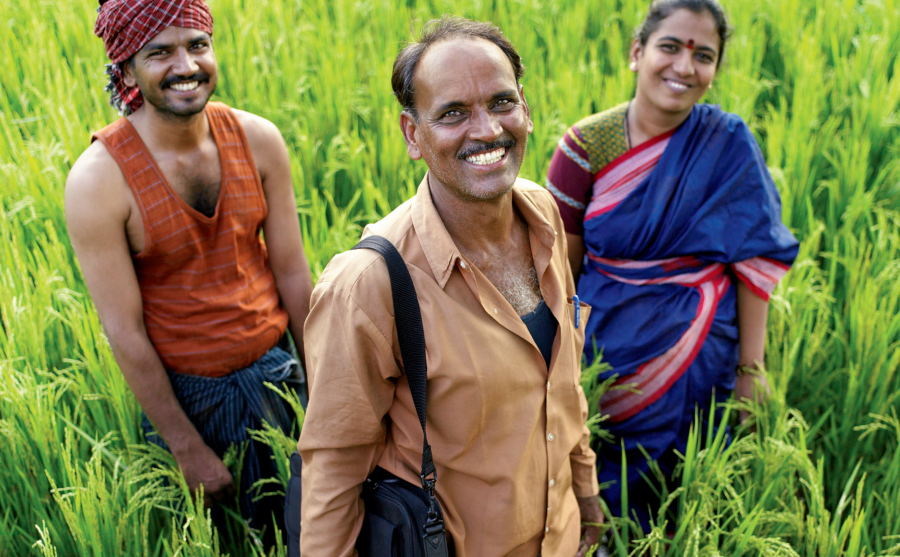

Farmers having a training
Applying the new learning
A successful farmer
Happy farmers
Case study 1 - from rural India
Introduction
In this case study we will discuss how a rural village (Oshida state) in India adopted eAgriculture to ease there day-to-day life and become success. As global population growth continues to soar, food security—the availability of and access to food—is an increasing concern. At the same time, high costs and inefficiencies have made farming an increasingly unviable profession for small farmers in developing countries. A successful eAgriculture project in the state of Odisha, India, demonstrates how technology can be used to address these issues and improve the livelihoods of small farmers. In just over one year, the eAgriculture project helped 6,000 farmers increase their incomes as much as 300 percent, and created job opportunities for local entrepreneurs.
For Whom : For Small Farmers
High demand, low profits Human life depends on food, and in developing countries most of that food is produced by small farmers. Despite the vital role farmers play in food security, most struggle to make a living—and many more are leaving farming to pursue economic opportunities in urban areas. The rural-urban migration creates societal imbalances with severe consequences to development and growth.
Technology-Based Project Delivers Results
The eAgriculture project in Odisha, India, is a private initiative developed by Grameen Intel Social Business and partners to improve the lives and livelihoods of small farmers in the state. As with other eAgriculture initiatives, the goal of the project is to use technology to strengthen the local agricultural system and improve productivity for everyone in the agriculture value chain—including small farmers.
How it Works
An Odisha-based business called eKutir launched the eAgriculture project in 2009. As shown in the figure below, the project began with hiring and training local entrepreneurs, who would work closely with farmers throughout the project. Farmers discussed their challenges with the entrepreneurs, who used netbooks to collect demographic details such as the types of crops grown, nutrient soil capacity, and access to irrigation and inputs. The entrepreneurs, then advised farmers and found ways to help them lower costs and improve productivity. Using broadband access at local kiosks the entrepreneurs connected the farmers to remote stakeholders in the agriculture chain, including suppliers and buyers. The entrepreneurs used specialized software designed by Grameen Intel Social Business to give farmers detailed information and low-cost assistance with seeds, fertilization, cultivation, and other key aspects of farming. For instance, entrepreneurs used a new soil testing module to replace the existing soil testing method in the Odisha area, which is rarely available,
eAgriculture Opportunities
eAgriculture projects like the one in Odisha provide opportunities and benefits to a wide range of stakeholders, from small farmers to businesses and governments.
- New job opportunities with growth potential
- Opportunities to deliver much-needed services to farmers (soil testing, financing, logistics, farm machinery, etc.)
- Lower costs
- Increased productivity and income
- Better risk mitigation (e.g., pests, disease, weather)
- Greater access to expert information, services, and best practices
- Direct, inexpensive, and transparent access to larger groups of farmers
- Better forecasting for greater efficiency and fewer losses
- Stronger relationships with farmers
- Economic growth and job creation in rural areas
- Greater food security
- Improved relationships with rural communities Market aggregators
- Ability to optimize market efficiency by connecting buyers and sellers
- Ability to directly and cost-effectively source produce in bulk
- Access to detailed information on farmers to better assess credit-worthiness and manage risk
- Ability to serve new customers who previously had no formal access to affordable finance
- Better understanding of unmet financial needs, enabling creation of innovative financial products such as crop loans and insurance